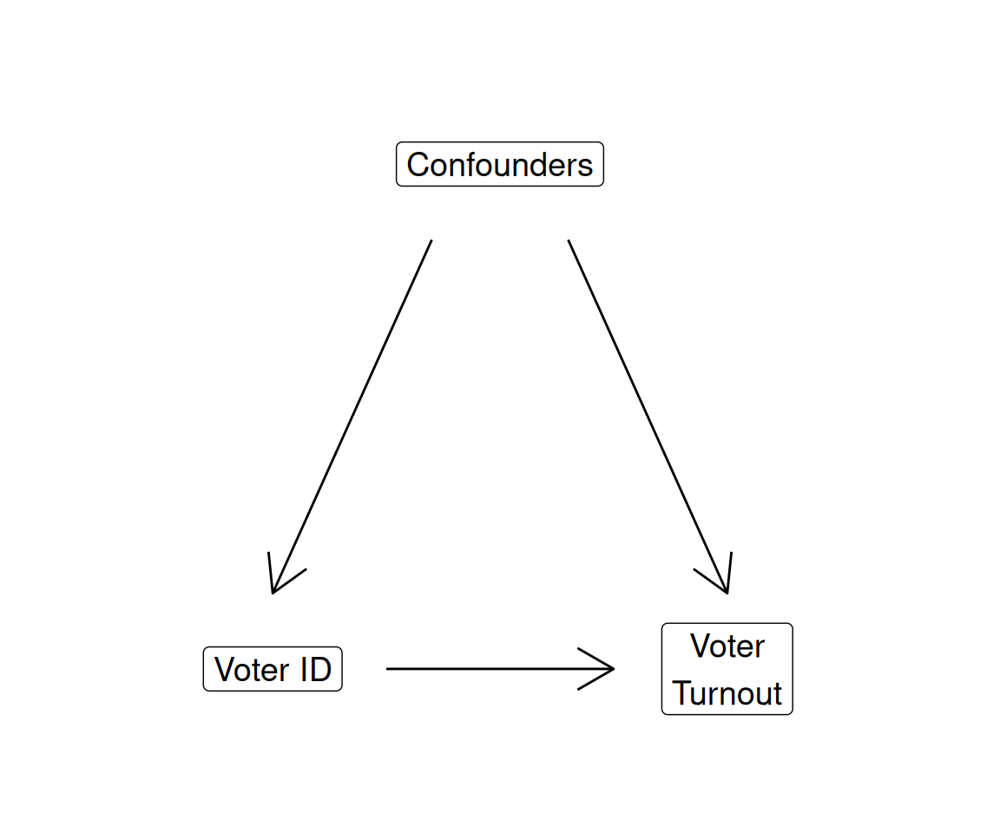
Ordinary Least Squares (OLS) Regression
Justin Leinaweaver (Spring 2026)
RQ: Do voter ID laws reduce voter turnout?

Possible Confounders
RQ: Do voter ID laws reduce voter turnout?
| (1) | (2) | (3) | (4) | (5) | |
|---|---|---|---|---|---|
| Voter ID | -3.05 | -2.95 | -1.43 | -3.12 | -1.15 |
| (1.72) | (1.67) | (1.71) | (1.76) | (1.53) | |
| Battleground State | 3.69* | 4.04* | |||
| (1.83) | (1.56) | ||||
| Trump Vote (%, 2016) | -0.21* | -0.29* | |||
| (0.08) | (0.07) | ||||
| Hispanic (%) | -0.10 | -0.22* | |||
| (0.08) | (0.07) | ||||
| Black (%) | -0.11 | -0.17* | |||
| (0.09) | (0.07) | ||||
| Constant | 69.90* | 68.87* | 80.20* | 72.29* | 87.28* |
| (1.38) | (1.43) | (3.86) | (2.03) | (4.22) | |
| Num.Obs. | 50 | 50 | 50 | 50 | 50 |
| R2 | 0.061 | 0.136 | 0.198 | 0.112 | 0.423 |
| R2 Adj. | 0.042 | 0.100 | 0.164 | 0.055 | 0.357 |
| RMSE | 5.73 | 5.49 | 5.29 | 5.57 | 4.49 |
| * p < 0.05 | |||||
RQ: Do voter ID laws reduce voter turnout?
| (1) | |
|---|---|
| Voter ID | -1.15 |
| (1.53) | |
| Battleground State | 4.04* |
| (1.56) | |
| Trump Vote (%, 2016) | -0.29* |
| (0.07) | |
| Hispanic (%) | -0.22* |
| (0.07) | |
| Black (%) | -0.17* |
| (0.07) | |
| Constant | 87.28* |
| (4.22) | |
| Num.Obs. | 50 |
| R2 | 0.423 |
| R2 Adj. | 0.357 |
| RMSE | 4.49 |
| * p < 0.05 | |
Adapting a Regression to Different Relationships
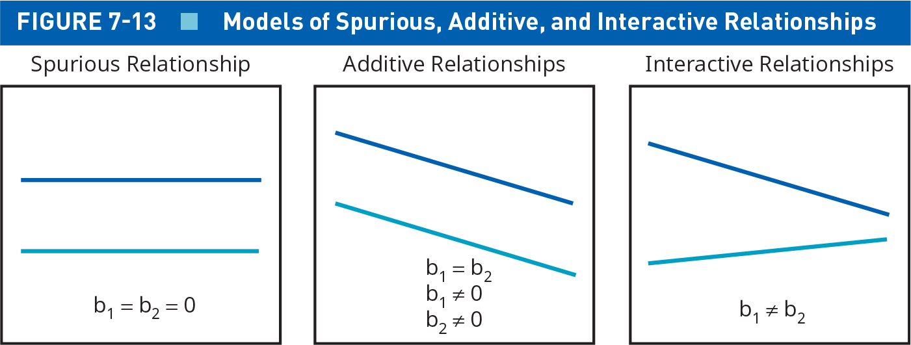
RQ: What explains the variation in how Americans feel about journalists?
H1: The more knowledgable individuals are about the world, the more they will value journalists
H2: The political parties have VERY different relationships to the media
Load the ANES2020_Data_Extract-WEEK13.RData
Perform univariate analyses on the three variables: ft.journalists, political_knowledge, partyid3
RQ: What explains the variation in how Americans feel about journalists?
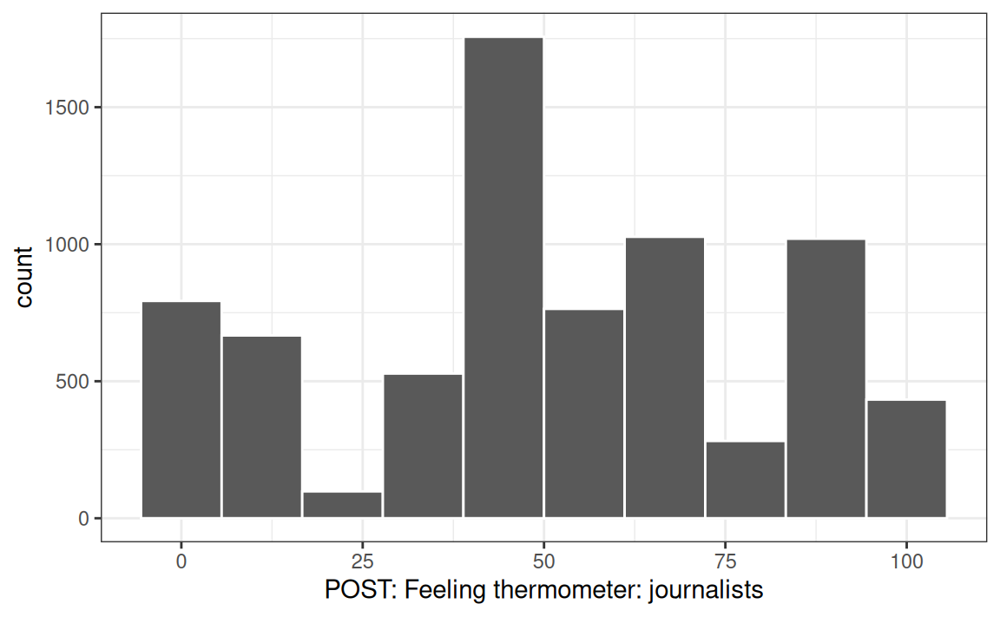
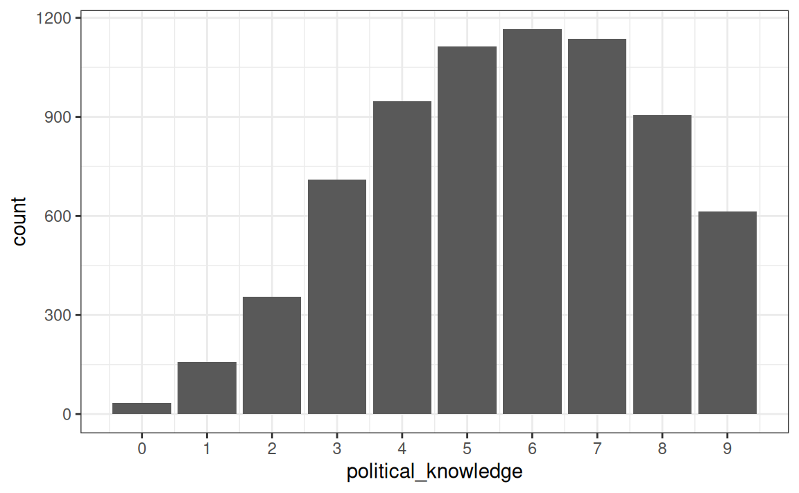
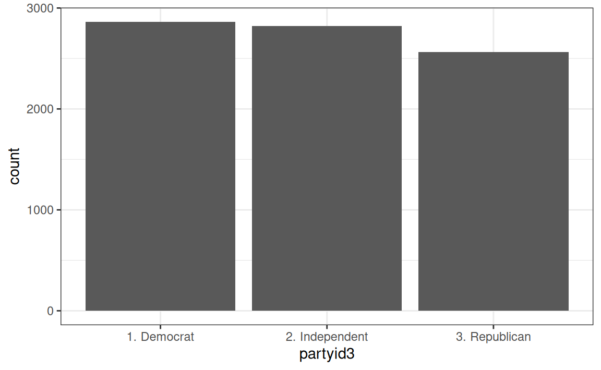
RQ: What explains the variation in how Americans feel about journalists?
H1: The more knowledgable individuals are about the world (political_knowledge), the more they will value journalists (ft.journalists)
H2: The political parties (partyid3) have VERY different relationships to the media (ft.journalists)
H1: Interval x Interval -> Correlation and scatter plot
H2: Interval x Nominal -> Difference of means and ANOVA
[1] 0.08284504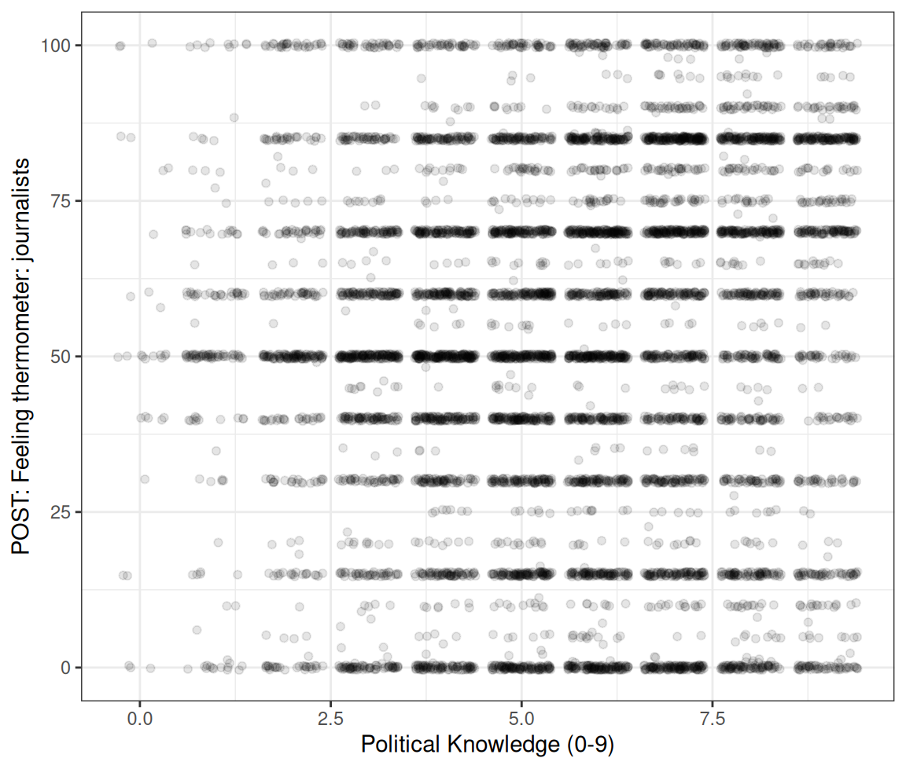
partyid3 ft.journalists
1 1. Democrat 70.35636
2 2. Independent 51.17118
3 3. Republican 30.48746RQ: What explains the variation in how Americans feel about journalists?
Create TWO dummy variables using partyid3
Fit and evaluate TWO OLS models
RQ: What explains the variation in how Americans feel about journalists?
| (1) | |
|---|---|
| Political Knowledge (0-9) | 1.15* |
| (0.17) | |
| Constant | 44.90* |
| (0.99) | |
| Num.Obs. | 7079 |
| R2 | 0.007 |
| R2 Adj. | 0.007 |
| RMSE | 29.04 |
| * p < 0.05 | |
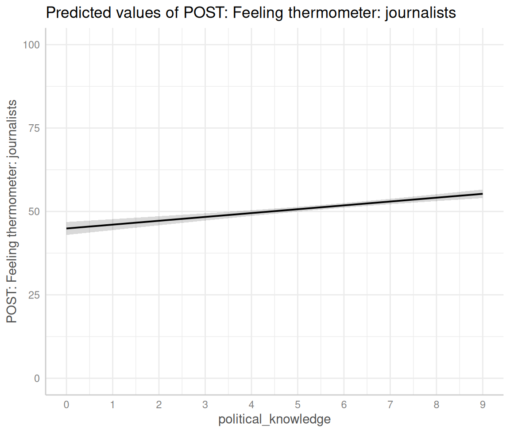
RQ: What explains the variation in how Americans feel about journalists?
| (1) | |
|---|---|
| Democrat | 39.87* |
| (0.70) | |
| Independent | 20.68* |
| (0.70) | |
| Constant | 30.49* |
| (0.51) | |
| Num.Obs. | 7347 |
| R2 | 0.309 |
| R2 Adj. | 0.309 |
| RMSE | 24.13 |
| * p < 0.05 | |
RQ: What explains the variation in how Americans feel about journalists?
| (1) | |
|---|---|
| Democrat | 39.87* |
| (0.70) | |
| Independent | 20.68* |
| (0.70) | |
| Constant | 30.49* |
| (0.51) | |
| Num.Obs. | 7347 |
| R2 | 0.309 |
| R2 Adj. | 0.309 |
| RMSE | 24.13 |
| * p < 0.05 | |
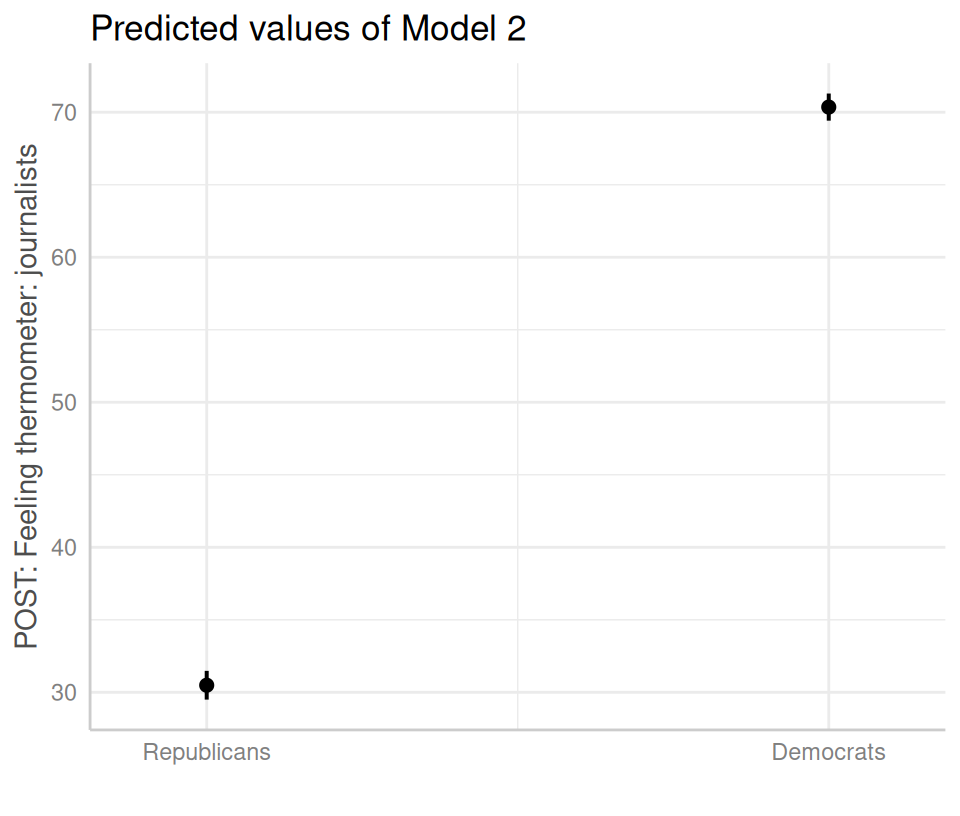
[1] -0.1788872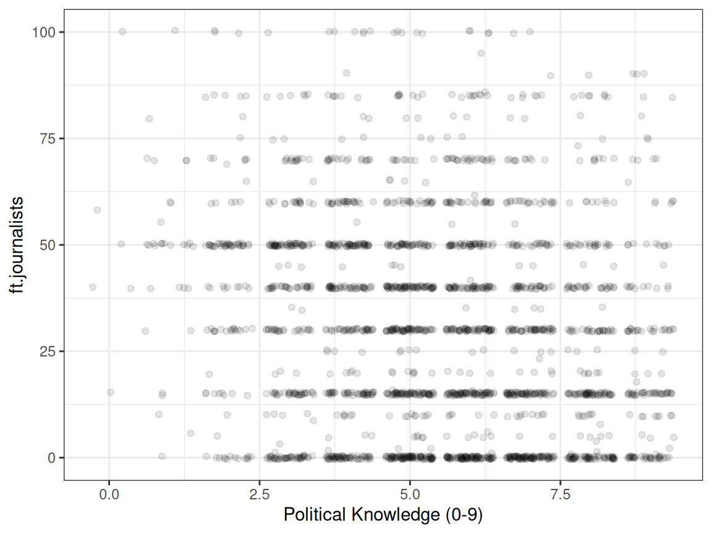
RQ: What explains the variation in how Americans feel about journalists?
| (1) | (2) | (3) | |
|---|---|---|---|
| Political Knowledge (0-9) | 1.15* | -0.58* | |
| (0.17) | (0.17) | ||
| Democrat | 39.87* | 20.48* | |
| (0.70) | (1.76) | ||
| Knowledge x Democrat | 3.45* | ||
| (0.28) | |||
| Independent | 20.68* | 20.93* | |
| (0.70) | (0.70) | ||
| Constant | 44.90* | 30.49* | 33.34* |
| (0.99) | (0.51) | (1.06) | |
| Num.Obs. | 7079 | 7347 | 7071 |
| R2 | 0.007 | 0.309 | 0.331 |
| R2 Adj. | 0.007 | 0.309 | 0.331 |
| RMSE | 29.04 | 24.13 | 23.83 |
| * p < 0.05 | |||
RQ: What explains the variation in how Americans feel about journalists?
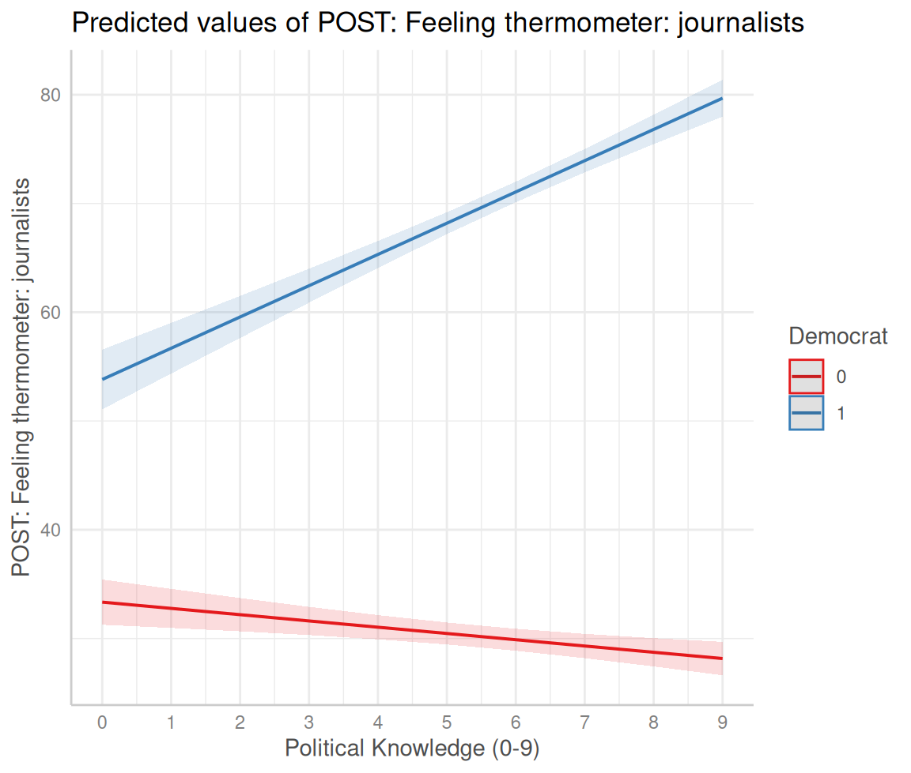
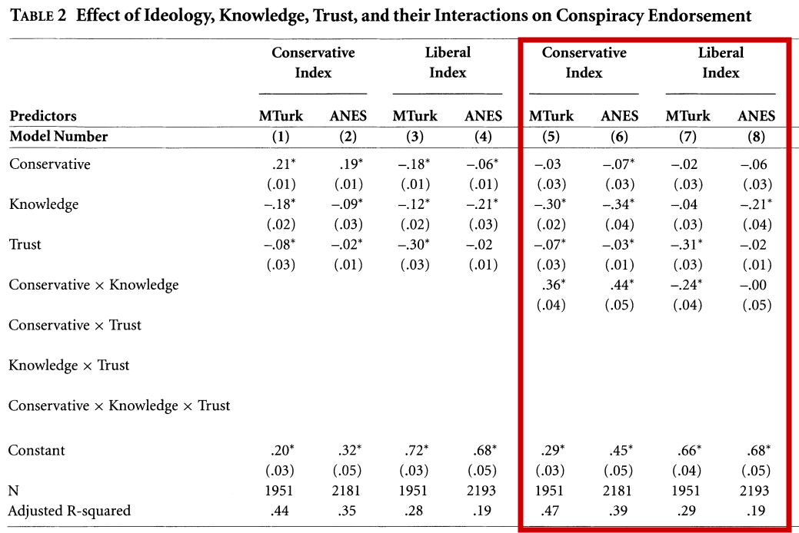
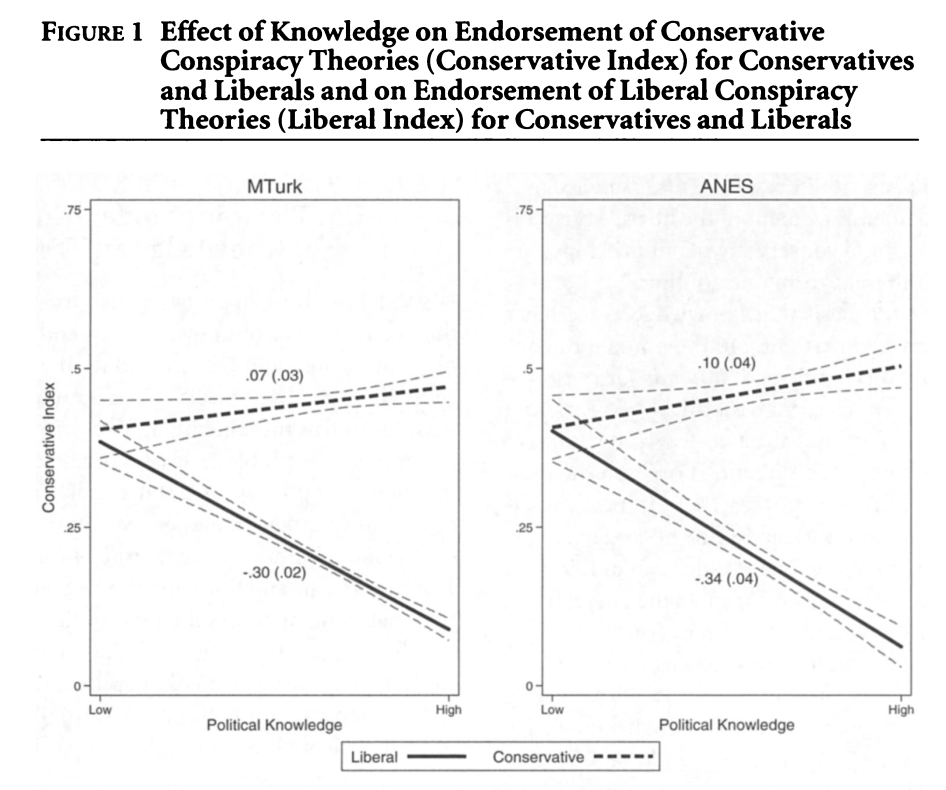
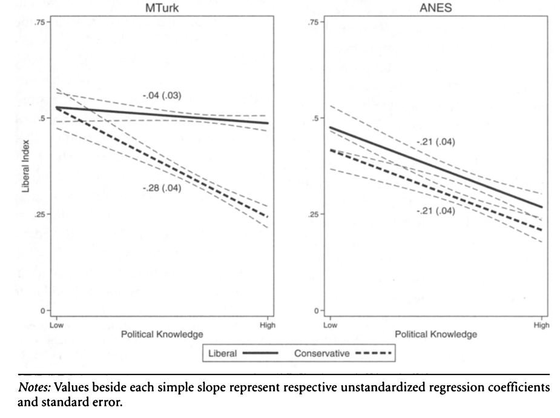
Read Chapter 13 on residuals
Complete Exercises 3 and 4
Practice fitting OLS regressions with OLS to answer this question
RQ: Does a free press reduce global economic inequality?
Model 1: Regress economic inequality (gini.index) on the press freedom score (press.freedom.fh)
Model 2: Regress economic inequality on whether the judiciary is independent (indep.judiciary)*
Model 3: Regress economic inequality on the interaction between press freedom and a free judiciary